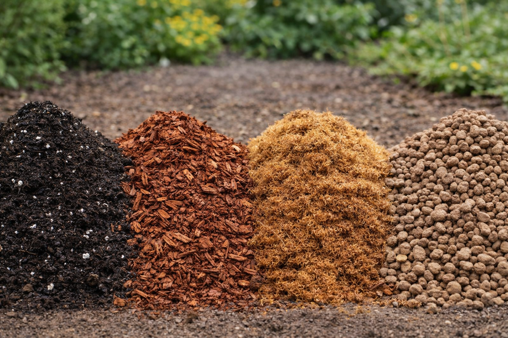

Substráty pro růže
Speciální směsi navržené pro zdravý růst, bohaté kvetení a správný vývoj růží.
Nabízíme zahradnické substráty pro běžné i speciální použití. V sortimentu najdete univerzální i speciální substráty, rašelinu, zahradnický kompost i směsi určené pro konkrétní druhy rostlin.

V nabídce máme zahradnické substráty pro široké využití při výsadbě, přesazování i běžném pěstování. Vhodné jsou pro zahradu, skleník, nádoby i domácí použití.

Speciální směsi navržené pro zdravý růst, bohaté kvetení a správný vývoj růží.

Vhodné pro muškáty, surfinie a další rostliny pěstované v truhlících a nádobách.

Vhodné pro zakořeňování řízků a množení rostlin v domácích i zahradnických podmínkách.

Vhodné pro zakořeňování řízků a množení rostlin v domácích i zahradnických podmínkách.
Rašelinu využijete při zlepšení půdy, výsadbě i pěstování rostlin, které vyžadují kyselé prostředí.
Zahradnický kompost je vhodný pro obohacení půdy, zlepšení její struktury a podporu zdravého růstu rostlin.
Sortiment doplňují také speciální substráty určené pro konkrétní druhy rostlin a specifické pěstitelské potřeby.